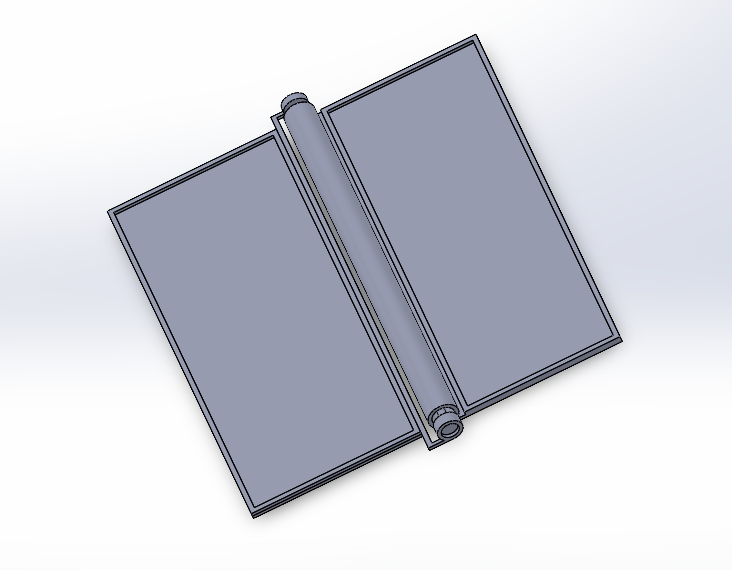

Portafolio de Actividades
Proyecto de Ingenieria I
Departamento de Ciencias e Ingenierías | Universidad Iberoamericana Puebla, México.

- Resumen -
.
Para la impresora 3D aprendimos hacer una pieza movible a nuestra creaticidad, para observar que no solamente se pueden imprimir las piezas por partes, si no que tambien las puedes imprimir en una sola exibición sin nesecidad de ensamblar en solidworks.
- Introducción -
La impresora 3D es una innovación moderna permitiendo imprimir figuras o piezas tridimencionales a partir de modelos digitales creados por la creatividad de uno mismo, este facilita la creación de objetos 3d sin tener que gastar en materiales y andar armando por separado, desde su innovación a sido una ayuda para proyectos en diversas ramas de ingenieria..
- Materiales -
Impresora 3D
Diseño en solidworks.
Archivo en STL.
- Desarrollo -
Para poder impimir en la impresora 3D, nesecitamos diseñar en solidworks un objeto al gusto, pero con un diseño peculiar, que tiene que tener ciertos espacios para que este se pueda mover, en este caso se hizo un telefono pegable moderno de hoy en dia, sin ensamblar nada pubimos que extruir partes, dandoles una separación de 0.2 mm para que no se mueva.

- Conclusiones -
Aprender hacer este tipo de figuras o diseños, nos ahorra mucho tiempo para no armar y para no estar imprimiendo pieza por pieza.